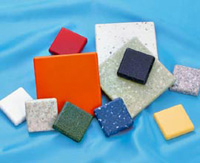
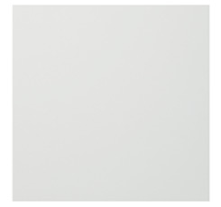
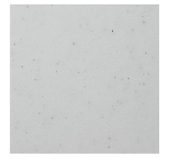
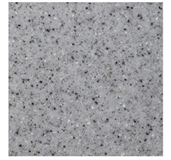
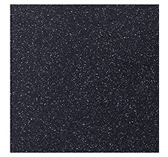

- TOP
- 人工大理石
ARTIFICIAL MARBLE高品質の人工大理石
「コーリアン®」
「ce-fit（セフィット）シリーズ」から、施工が簡単で美しい見た目が長持ちする人工大理石についてご紹介します。天然の大理石よりも安価でありながら、なめらかで美しい外観と優れた耐久性、メンテナンス性などをあわせ持つ人工大理石は、インテリアにも多く用いられている素材です。
アクシス株式会社では、高品質の人工大理石「コーリアン®」をご提供しています。
人工大理石とは？

自然界から産出される大理石は鉱物ですが、「人工大理石」は石油由来の合成樹脂。大理石より安価ながら美しい外観と優れた耐久性を備えていることから、キッチンカウンターの天板などに多く用いられています。また、紫外線にも強いことから窓台などにも最適です。
人工大理石は「ポリエステル系樹脂からつくられるもの」と「アクリル系樹脂からつくられるもの」の2つに大別できますが、アクシス株式会社がce-fit（セフィット）シリーズとして製造・販売しているのは、アクリル系樹脂の中でもとりわけ諸特性で優れているメタクリル樹脂製品「コーリアン®」です。美しさと強さ、施工性、デザイン性、メンテナンス性をバランスよく備えており、高品質な人工大理石と言えます。
コーリアン®とは
コーリアン®は1965年にアメリカで開発された人工大理石で、アクリル樹脂に高品質の鉱物を混ぜて機能を強化した製品です。なお、弊社の生産工場には人工大理石を任意の形状・寸法に加工するノウハウがあり、同種・異種素材との接着加工する技術も保有しています。人工大理石製キッチンワークトップやカウンターなど、ここから世に送り出された製品は20年以上にわたってプロのお客様から厚い信頼をいただいています。
コーリアン®のサイトはこちら
人工大理石の特長
物理特性
傷つきにくい
耐衝撃性に優れ、12.3mm厚の人工大理石に90cmの高さから450gの鋼球を落下させても損傷しません。
火に強い
樹脂製でも熱に強いのが人工大理石。350℃に熱した平底鍋を5分間直置きしても損傷しません。
日焼け・割れ・水濡れに強い
耐候性に優れ、紫外線や水の影響を受けにくいという特徴があります。
薬品に強い
薬品や化粧品が付着しても損傷しません。
艶仕上げが美しい
表面加工もしやすく、艶のある仕上げも自在です。
継ぎ目がわからない
どんな長尺物も1枚ものにしか見えない自然な仕上がりになります。
メンテナンス性
お手入れ簡単
汚れや水あかは水拭きでさっとひと拭きできれいになります。
しつこい汚れに強い
こびりついた汚れはクリームクレンザーとスポンジで簡単にお手入れ可能。
磨けば傷も目立たない
サンドペーパーやスポンジたわしで磨けば傷も目立ちません。
安全性
ホルムアルデヒドを発生しない
シックハウス症の原因となるVOC（揮発性有機化合物）不使用です。
環境ホルモンと無縁
人体に害を及ぼす環境ホルモンを含みません。
濡れても有害物質が溶け出さない
有害物質によるリスクがないので、食品を扱うご家庭やプロの厨房でも安心です。
ダイオキシンが出ない
焼却・廃棄時でも猛毒のダイオキシンを発生させません。
人工大理石のカラーバリエーション
- 
- カリーノホワイト
- 
- ペッパーホワイト
- 
- グレー
- 
- ブラック
カタログ
人工大理石の商品カタログはこちらからダウンロードいただけます。